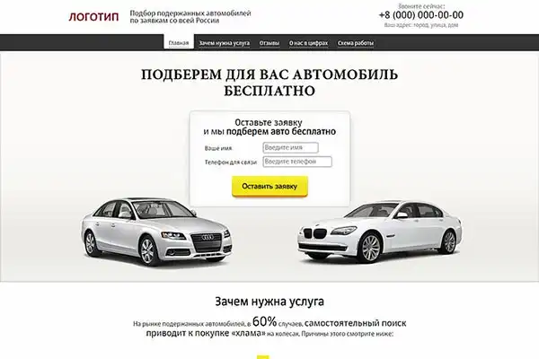

Актуальность бизнес-идеи
В России, особенно на юге страны, все больше появляется автомобилей с армянскими номерами. Благодаря вступлению Армении в Евразийский экономический союз в 2015 году россияне могут беспрепятственно передвигаться по стране на таких машинах, даже не регистрируя ее в России.
Преимущество покупки авто в Армении — это низкая стоимость подержанных машин и «эксклюзивных» иномарок. Такие марки D-класса, как Mazda 6, Kia Optima и Hyundai Sonata стоят ощутимо дешевле по сравнению с теми же предложениями среди авто с пробегом на российском рынке.
Среди «экзотики» пользуются стабильным спросом праворульные Тойоты — минивэны и микроавтобусы.

В Армении правый руль попал под запрет, поэтому теперь их интенсивно продают за рубеж. Кроме них, в стране можно найти по бросовым ценам «Волги», «Чайки», Ford Mustang, Mercedes и даже BMW с переделанным на левую сторону рулем.
Затраты и прибыль
В организацию услуг по подбору автомобилей из Армении и помощи в их покупке нужно вложить на старте около 220 тысяч рублей, не считая оборотного капитала на выплату заработных плат и прочих расходов. Ежемесячная прибыль проекта после выхода на окупаемость составит 200 000 рублей при учете 20 успешных сделок в месяц. Соответственно, чем больше сделок — тем выше доход. Срок окупаемости — 2 месяца.
Затраты на старте: примерный расчет для Новороссийска
- Оформление бизнеса - 5’000 ₽
- Разработка сайта - 50’000 ₽
- Оборудование - 112’000 ₽
- Промо-кампания - 30’000 ₽
- Изготовление POS-материалов - 23’000 ₽
- Итого - 220’000 ₽
Ежемесячные затраты
- Аренда офиса - 20’000 ₽
- Расходы на логистику - 10’000 ₽
- Фонд оплаты труда - 150’000 ₽
- Маркетинг и реклама - 20’000 ₽
- Телефон, интернет, связь - 5’000 ₽
- Прочие расходы - 3’000 ₽
- Итого - 208’000 ₽
Разрешения и документы
Регистрация бизнеса
Если вы сразу решили вложить средства в проект и играть по-крупному с открытием офиса и продвижением бизнеса, то в первую очередь его нужно зарегистрировать. Обратитесь в налоговую для открытия ИП и принесите все необходимые документы. Код ОКВЭД 96: Деятельность по предоставлению прочих персональных услуг.
Систему налогообложения выберете упрощенную. Дополнительных лицензий и разрешений этот бизнес не требует.
Список документов для регистрации ИП
- Заявление о государственной регистрации физического лица в качестве индивидуального предпринимателя (форма № Р21001)
- Копия российского паспорта
- Квитанция об уплате госпошлины
Выбор помещения
Для того, чтобы консультировать, офис не обязателен — все можно делать удаленно через сайт и телефон, не выходя из дома.

Однако с этим сопряжены некоторые риски: все-таки покупка автомобиля — это не маленькое дело, поэтому клиент должен доверять консультанту. С этой стороны лучше, если у вас будет офис и клиенты могут увидеть вас персонально.
Арендуйте небольшое помещение в бизнес-центре — достаточно 10-12 квадратных метров. Стоимость будет зависеть от удаленности места от центра города: в спальном районе ближе к окраине дешевле всего. Если же вы решили не арендовать площадь, то «офисом» будет ваша собственная квартира. При необходимости можно встречаться с клиентами в коворкинге или кафе.
Оборудование
Для того чтобы обставить офис, вам потребуется минимум:
- Компьютерные столы (2 шт) - 10’000 ₽
- Кресла и стулья (4 шт) - 16’000 ₽
- Ноутбук или компьютер (2 шт) - 60’000 ₽
- Принтер - 8’000 ₽
- Кофеварка - 6’000 ₽
- Стол и диван для зоны отдыха - 12’000 ₽
- Итого - 112’000 ₽
Как выбрать поставщика
Суть вашего бизнеса в том, чтобы предоставить полную консультацию о том, как приобрести автомобиль в Армении, провести сделку, оформить все нужные документы, встретить в аэропорту и довезти до самого автомобиля — в общем, полное сопровождение сделки. При необходимости и желанию клиента — помогать в растаможке автомобиля в России.
Ваш бизнес открыт в России, а значит с Арменией у вас должны быть тесные связи, вы должны отлично ориентироваться на локальном рынке или же сотрудничать с местными экспертами, кто его хорошо знает. Местные агенты предоставляют машины, а вы — клиентов из России.
Подбирать объявления вы будете на сайте auto.am и list.am. Возможно, клиенты уже будут приходить с пожеланиями и моделями, которые нашли на этих сайтах.
В отличие от своего конкурента, list.am имеет русскоязычную версию
Также ваша забота — снять все возражения и беспокойства насчет покупки автомобиля с армянскими номерами: стоимость, документы, легальность, отношение ГИБДД и другие вопросы.
Персонал
Вести бизнес на российской стороне сможет сам собственник — один или с личным помощником, который возьмет на себя некоторые простые задачи. В Армении же вам нужно будет набрать агентов, которые будут помогать переводить и оформлять документы, общаться с представителями местных органов и так далее.
Они работают за небольшую плату — 70-100 долларов с каждой сделки. Количество таких агентов зависит только от амбиций собственника и объемов работы. В любом случае вы будете привлекать новых по необходимости, для начала сформировав пул из надежных сотрудников. В целом расходы на персонал за месяц — около 150’000 рублей.
Как рекламировать бизнес
Реклама — основной столп бизнеса на подобных услугах. Чем больше у вас каналов, тем шире клиентская база. В первую очередь запустите сайт, который нужно идеально оптимизировать, чтобы он приводил новых посетителей. Продвигайте его через всевозможные каналы:
- Реклама программатик: контекстные объявления в Яндексе, Гугле, социальных сетях
- Нативная реклама через блоги на тематических площадках
- Рекламные посты у блогеров-автомобилистов в Инстаграм
- Форумы автолюбителей — по договоренности с администрацией
Уделите внимание и наружной рекламе, пусть и в меньшей степени: оформите вывеску, разместите баннеры в общественном транспорте, на остановках. Используйте обзвон по холодной и теплой базе — это тоже может принести небольшой результат.
Развивайте партнерство с другими бизнесами: СТО, магазинами автоаксессуаров, автомойками, школами вождения, заправками. У них можно размещать рекламу непосредственно на точках продаж в виде визиток и флаеров, а также партнерские посты в их блогах и социальных аккаунтах. Главное в маркетинге — комплексный подход и регулярность.
Плюсы и минусы бизнес-идеи
Преимущества идеи лежат на поверхности:
- Бизнес на услугах — высокая прибыль после окупаемости
- Возможность расширения, масштабирования бизнеса
- Престижная деятельность в автомобильной сфере
Недостатки идеи видны не сразу:
- Автомобиль из Армении непросто продать в России (из рук ваших клиентов на вторичном рынке)
- Высокие затраты на рекламу
- Нужен контроль за деятельностью армянских агентов или очень надежные сотрудники